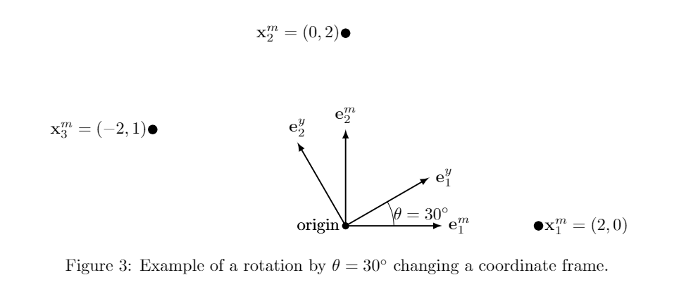

Yes, that makes the definition of location circular, but at some point we have to just agreeon some reference frame and then go from there. Latitude and longitude are based off theequator and prime meridian. Why is the prime meridian the prime meridian? Not for anytechnical reason, but just because it has become the consensus. Some examples of other coordinate systems include polar coordinates in 2-D, and sphericalor cylindrical coordinates in 3-D. Or, Figure 1 shows some coordinate systems that can beobtained with non-orthonormal basis vectors in 2-D. Latitude/Longitude, as used by GPS, isa common, non-Cartesian coordinate system and reference frame.1 Introduction
This document is meant to explain the basics of what a reference frame is, in 2-D space. The main points to explain are:
We'll tackle each of these in the following sections.
2 Coordinate Systems, Reference Frames, and Vectors
What is a location? When we want to describe to someone else where something is, there are several ways we can do this. One might be to give them an address, e.g. 4457 Anise Dr, El Paso, TX 1. Or, we might give directions like "down the road about a mile and then to the left." Or, we could give them a latitude and longitude so they can plug it into their GPS.
All of these methods for describing location have one thing in common: they are relative to something else. The address gives a house number, but that number only makes sense on a given street. 4457 is useless without the rest of the address. Also, addresses on a street go up when going in a particular direction, implying a "0" location (typically a spot in downtown). Similarly, "down the road about a mile" implicitly assumes "starting from where you are." Latitude and longitude are in relationship to the equator and the prime meridian. The first question that has to be answered for any location information is "In relationship to what?" 2 The answer to this question is what we call the origin.
What these methods do not have in common is how you describe getting from the origin to the desired location. Because math and numbers are really useful, we would like a way to take a set of numbers (a vector) and have that describe a location in relationship to the origin. Formally, the method for taking a set of numbers and turning it into a relative location is called a coordinate system.

While there are many possible coordinate systems, we will focus solely on Cartesian coordinate systems. 3
Cartesian coordinate systems use an orthonormal (orthogonal and unit length) set of vectors (the coordinate basis) emanating from the origin that completely characterize the location of any object in that coordinate system. By assigning one number in the location vector to each basis vector, we can express any location as the weighted sum of basis vectors. Figure 1 shows examples of vectors that define a two-dimensional (2-D) coordinate frame, but only one of them is a Cartesian due to the vectors being both orthogonal and unit length.
While defining our coordinate system to be Cartesian means that there will be a set of orthonormal vectors defining coordinates, which set of vectors has not yet been defined. This decision of which set of vectors and their origin will be used is referred to as the reference frame. By defining both the coordinate system and the reference frame, the complete mapping of numbers to locations is defined. Combined, we refer to this as a coordinate frame. In this paper, we always assume this means a Cartesian coordinate frame unless specifically stated otherwise.
2.1 Vectors
Once a Cartesian coordinate frame is defined, a simple vector can be used to define the location of any object within that coordinate frame. For example, the vector [2,1] would mean to move 2 units along the first axis (e1) and 1 unit along the second axis, (e2). Note that because this is a Cartesian coordinate system, the mapping between locations and vectors is exactly one-to-one. (The vector [2,1] represents only one location and each location maps to exactly one vector.)
Vector notation: From here on, unless explicitly stated, we assume all vectors represent a location in a Cartesian coordinate frame. Furthermore, to simplify notation, when describing a vector we will bold-face it (e.g., x) and put a superscript on it that refers to what coordinate frame it is in. So, we might have my (m) coordinate frame and your (y) coordinate frame. When I want to give the location for object x, I will give locations in my coordinate frame and denote that location as xy. When you give the location for the same object in your coordinate frame, it will be xy. Note that the numerical values in the two vectors may be very different, even though they refer to the same location. Let's now discuss how to transform between coordinate frames in two-dimensions.
3 Changing Coordinate Frames
A reference frame for Cartesian coordinate systems is defined by two things: an origin and a set of orthonormal vectors that define directions away from the origin. Let's start with a change of origin location. We will be attempting to transform from my (m) coordinate frame to yours (y).
3.1 Handling a change in coordinate origin
If you and I are both facing the same direction, all you need to know is where I am in your coordinate frame. We denote this quantity m where the coordinate frame's letter is bolded to show it is a vector. The transformation is now a simple vector addition operation
3.2 Handling different coordinate frame axes
When transforming from one coordinate frame to another, we need to understand how the basis vectors are different between the coordinate frames. The mapping of the basis vectors from one reference frame into another is generally referred to as a rotation. In two dimensions (2-d), this is represented by a single rotation angle as shown in Figure 3. To convert a vector from one coordinate frame's set of vectors into another, we use a Given's rotation matrix, defined as:

This matrix enables the conversion of a vector between two coordinate frames with the same origin. Consider Figure 3 that has three points ({x1,x2,x3}), all


expressed in the m coordinate system. Because θ = 30◦, then rotation matrix going from m to y (denoted Cmy) will be:
For each point in Figure 3, the location of that point in your coordinate system can be derived by multiplying the rotation matrix and the vector together, yielding:


Let us consider what some of these numbers mean as observing what happens numerically can give some insight into what a proper rotation does.
3.2.1 Rotation Matrix Properties
Note that the Given's rotation matrix has some special properties that we should discuss. Mathematically, the matrix is a special orthonormal matrix, meaning it has the following properties:
.
where CT
Cym = (Cmy)T
represents the transpose of the matrix. This property means that if you have the matrix to go from one coordinate frame to the other, it is relatively straight-forward to go backwards as well.
The inverse of this operation can also be expressed as:
xy = Cym xm + my
Note that my = -Cymym, so we also have:
xm = Cmy xy + ym
Let's walk through an example. In Figure 4, the point xy is at (3,2), the m coordinate frame axes are rotated 45° from the y coordinate frame axes, and my is (1,2). Given this information, we can solve for xm.
xm = Cmy(xy - my)


Now, let's see if we can go backwards and recover the original vector as well.

This demonstrates the capability to move from any coordinate frame to another coordinate frame and back again without loss of information.
4 Frame vs. Object Rotations
When discussing rotations, it is very important to realize there are two types of rotations: Object rotations and Coordinate frame rotations. So far, we have discussed frame rotations only. However, if you read about rotations or see them explained other places, it is often not clear what is being rotated, the object or the coordinate frame.
Consider the object shown in Figure 5 (a). This airplane-like object has a point on its nose that is at location (0,2), with the axes defined as shown in the figure. If the airplane itself rotates (an object rotation) by 30° then a Given's rotation matrix of

can be used to move the points to the new location. Note that from the "aircraft's" point of view, the point will still be at (0,2), but in a coordinate frame that is observing the aircraft(object), the coordinates will have changed. This change of coordinates is shown in Figure 5 (b). On the other hand, if the airplane is fixed but the frame that is observing the aircraft changes (once again by 30°) then the inverse of the prior Given's rotation is used to transform the points:
Whenever a rotation is being applied, it needs to be clear what the rotation is being applied for. This gets even more confusing because, most of the time, a coordinate frame rotation corresponds with an object (a sensor, platform, etc.) physically rotating. For example, if the aircraft is observing something not attached to the airplane, an airplane rotation of 30 degrees corresponds to a coordinate frame rotation. For the purposes of our explanation of rotations, we will assume all rotations are coordinate frame rotations. In other words, we assume everything in the world is fixed, but the sensor observing the word is what is rotating.